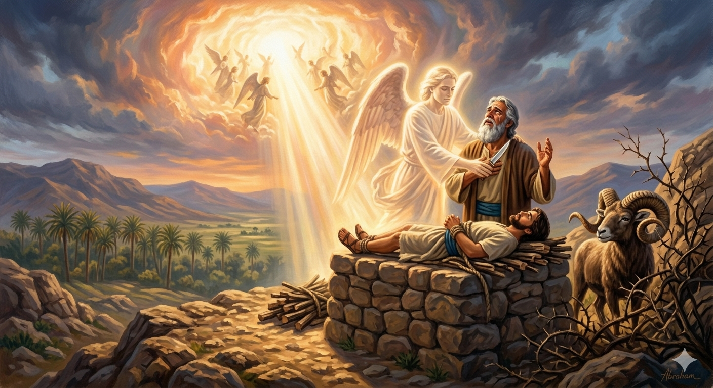

이삭이 번제 나무를 지고 모리아 산을 오르며 아버지 아브라함과 함께 걷는 장면
"이삭이 그 아버지 아브라함에게 말하여 이르되 내 아버지여 하니 그가 이르되 내 아들아 내가 여기 있노라 이삭이 이르되 불과 나무는 있거니와 번제할 어린 양은 어디 있나이까 아브라함이 이르되 내 아들아 번제할 어린 양은 하나님이 자기를 위하여 친히 준비하시리라 하고 두 사람이 함께 나아가서" — 창세기 22:7-8
창세기 22장에서 이삭은 아버지 아브라함과 함께 모리아 산을 오릅니다. 우리는 이 이야기를 대개 아브라함의 믿음 시험으로 읽지만, 이삭의 시각에서 바라보면 전혀 다른 깊이가 열립니다. 이삭은 이미 장성한 청년이었습니다. 당시 번제 나무를 짊어질 만큼 튼튼했던 그는, 연로한 아버지를 얼마든지 제압할 수 있었습니다. 그러나 그는 묵묵히 순종했습니다. "번제할 어린 양은 어디 있나이까"라는 이삭의 질문에는 두려움보다 신뢰가 담겨 있습니다. 그는 아버지를, 그리고 아버지의 하나님을 믿었습니다.
이삭의 이 순종은 훗날 십자가를 지고 골고다 언덕을 오르신 예수 그리스도의 모습을 예표합니다. 마찬가지로 어린 양을 친히 준비하신 하나님의 약속은, 세상 죄를 지고 가는 하나님의 어린 양(요 1:29)으로 성취됩니다. 이삭이 묶여 제단에 누워 하나님의 처분을 기다리는 순간, 하나님은 수풀에 뿔이 걸린 숫양을 준비해 두셨습니다. 하나님은 결코 늦지 않으십니다. 그분의 예비하심은 항상 우리의 극한 순간에 나타납니다. 이 사건으로 그 산의 이름은 "여호와 이레"(주께서 준비하시리라)가 되었습니다.

수풀에 뿔이 걸린 숫양을 발견하는 아브라함과 제단 위의 이삭
이삭의 순종은 단순히 어린 자녀가 부모에게 복종하는 이야기가 아닙니다. 그것은 충분히 저항할 수 있는 사람이 자신의 의지를 내려놓고 하나님의 손에 자신을 맡기는 성숙한 신앙의 모습입니다. 우리는 삶에서 때로 이해할 수 없는 상황, 내 힘으로는 어쩔 수 없는 고통 앞에 서게 됩니다. 그 순간 이삭처럼 "하나님이 준비하시리라"는 믿음으로 나아갈 수 있습니까? 그 믿음이 우리를 산 정상까지 이끕니다.
"여호와 이레"는 단순히 과거 아브라함 가정에 주어진 이름이 아닙니다. 우리가 가장 절망적인 순간, 하나님은 이미 출구를 준비해 두셨습니다. 우리가 보지 못하는 수풀 속에 하나님의 예비하심이 있습니다. 지금 당신이 올라가고 있는 그 모리아 산에서, 하나님은 이미 어린 양을 준비하고 계십니다. 그 확신을 붙들고 한 걸음씩 나아가는 것이 믿음입니다.
이삭은 자신이 번제물이 될 수 있음을 알면서도 순종하며 산을 올랐습니다.
당신은 지금 어떤 '모리아 산'을 오르고 있습니까?
하나님이 준비하신 어린 양은 반드시 있습니다.
믿음으로 한 걸음만 더 오르십시오.